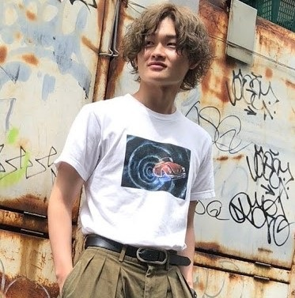

Haseru Sugisaki's
Portfolio
Web Developer
About

- 名前 : 杉﨑 駿(Haseru Sugisaki)
- 生年月日 : 1997年8月17日
- 学歴 : 埼玉県立久喜北陽高等学校卒業
- 経歴 : 高校卒業後、4年間、埼玉県警察の事務職員として従事。その後約1年間、スポーツジムのインストラクターとして働いたのち、エンジニアに転職。
Skills
バックエンド開発
PHPを使用したアプリケーション開発を行い、日々研鑽を積んでいます。
フロントエンド開発
HTML&CSSを使用したフロントエンド開発ができます。flexbox等を使用し、幅広いレイアウトやデザインをすることができます。
オリジナルアプリ開発
自ら要件定義、設計を行いオリジナルアプリの開発をします。お客様の意見を基にしたアプリの開発も致します。
データベース構築
MYSQLを使用し、データベース構築・削除などができます。
Contact
お仕事の依頼、ご相談がありましたら、メールでご連絡お願いします。
また感想、挨拶などお気軽にご連絡ください。お待ちしております。